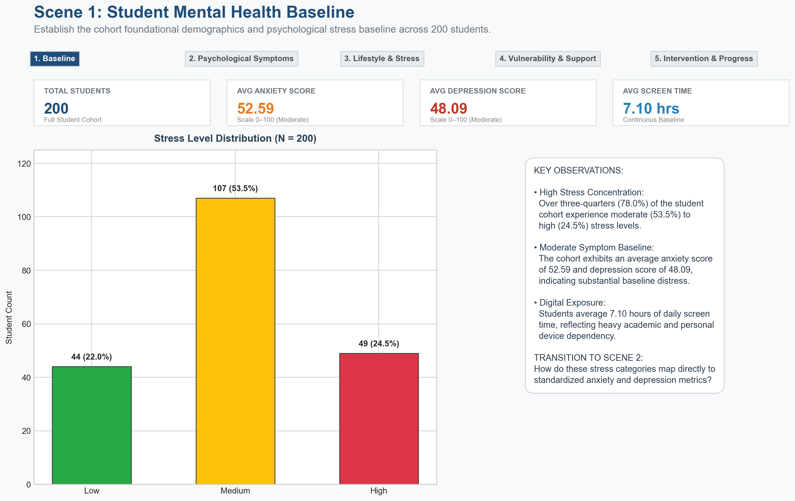

Scene 01
Student Mental Health Baseline
Establishes the macro-level distribution of stress across the 200-student university ecosystem. Over 78% of students experience elevated chronic distress.
- Low Stress: 44 students (22.0% of cohort)
- Medium Stress: 107 students (53.5% of cohort)
- High Stress: 49 students (24.5% of cohort)